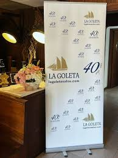
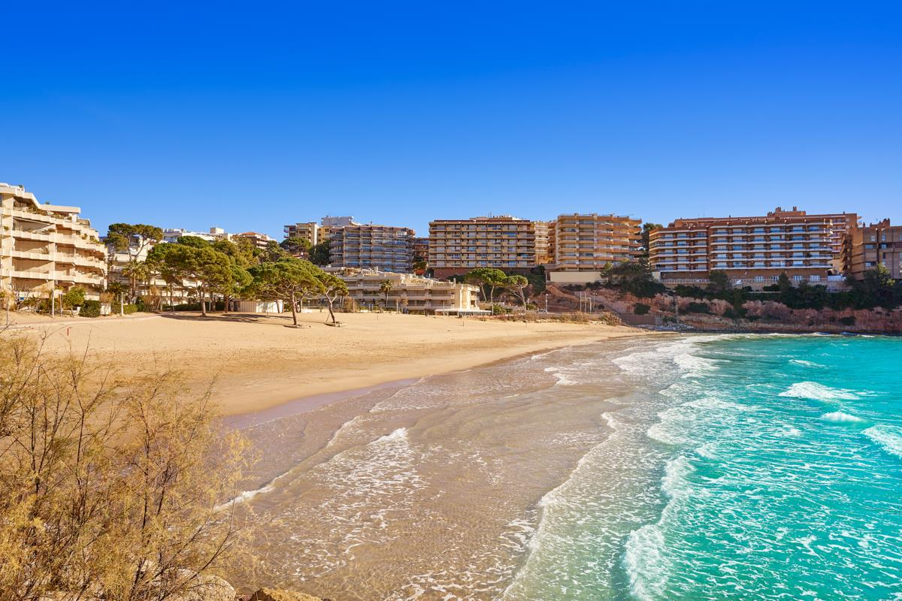
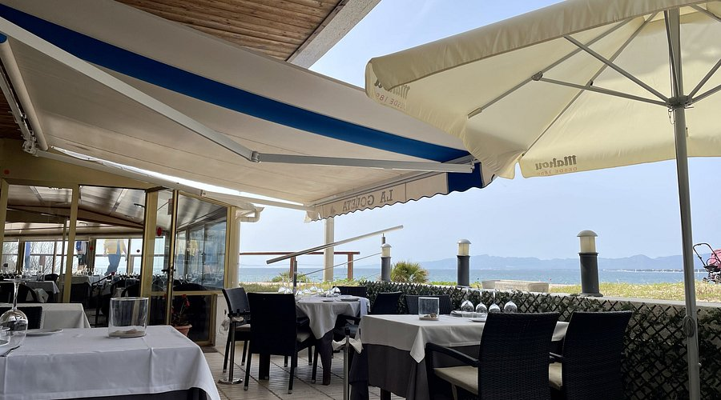

Cuatro décadas de cocina marinera en Salou
La Goleta abrió sus puertas en 1986, en plena expansión turística de la Costa Daurada. En un momento en que la restauración de la zona optaba mayoritariamente por formatos rápidos y propuestas estacionales, el restaurante eligió un camino distinto: apostar por la cocina de producto, el servicio de sala estructurado y una propuesta centrada en el pescado y el marisco de proximidad.
Cuarenta años después, La Goleta mantiene su posición como uno de los restaurantes de referencia del litoral tarragonés. Fundado por los hermanos Ángel y Emilio Vicente, desde su jubilación en 2021 Ignacio Ureña —maître y sumiller con más de once años en la casa— asumió la dirección, garantizando la continuidad de una sala de referencia en la Costa Daurada.


Un referente que ha sabido mantenerse
Los años ochenta representaron una etapa de cambio para Salou. La expansión turística generó una oferta de restauración diversa, orientada en muchos casos a un público estacional. En este contexto, algunos establecimientos optaron por desarrollar proyectos con una vocación gastronómica más definida. La Goleta se inscribe en esta generación.
La propuesta gastronómica del restaurante se ha articulado siempre alrededor de la cocina mediterránea: el pescado y el marisco como protagonistas, elaboraciones que forman parte del repertorio culinario del litoral, y una línea estable que ha resistido las tendencias pasajeras. Llegar a los cuarenta años en activo es una rareza en el sector.

Programa de la velada
Las personas detrás de La Goleta
Emilio Vicente
Fundador del restaurante
Propietario fundador y alma del restaurante durante más de tres décadas. Artífice de su identidad y prestigio en la Costa Daurada.
Ignacio Ureña
Director · Maître & Sumiller
Más de once años vinculado al restaurante. Asumió la dirección en 2021 manteniendo la esencia y el nivel de la sala.
Ficha del restaurante
Durante la cena compartiremos algunos momentos en stories. La crónica completa llegará días después.
Leer la crónica completa →